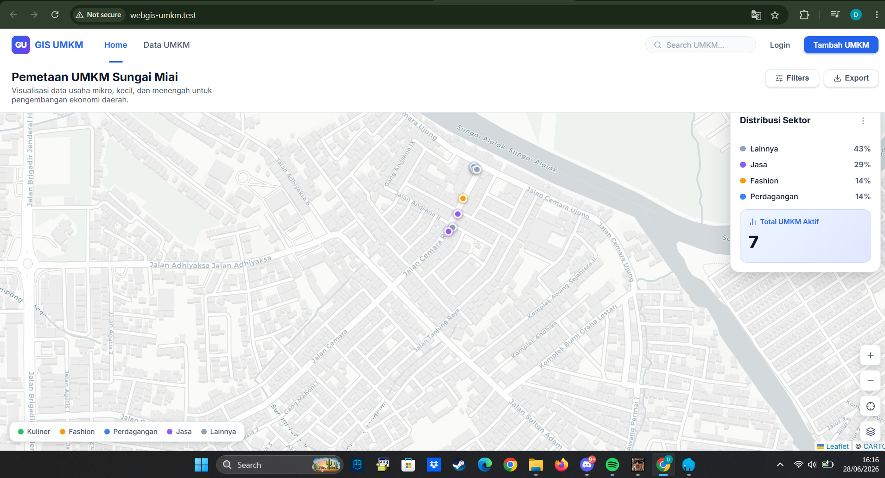
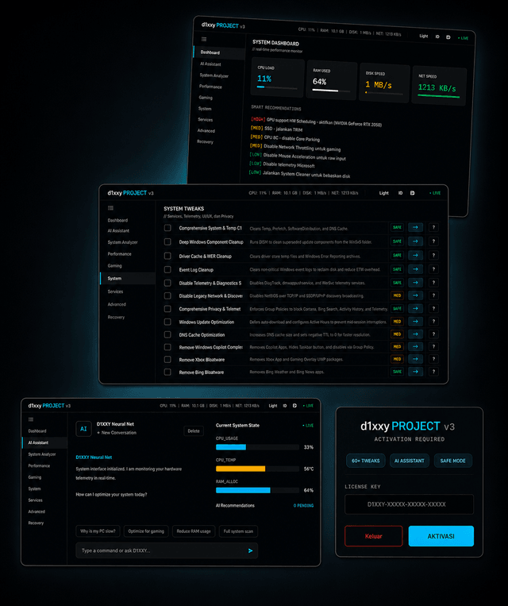

Lagi belajar Full Stack Web Development dari dasar, fokus utama di Laravel, sambil ngulik security dan penetration testing lewat proyek nyata.
Saya Dicky Nugraha Febriano, belajar dari dasar untuk jadi Full Stack Web Developer, dengan Laravel sebagai fokus utama, dari struktur database, autentikasi, sampai keamanan aplikasi.
Di sisi lain, saya juga belajar security dan bug bounty. Buat saya, kode yang baik bukan cuma yang jalan, tapi yang sudah dipikirkan celah keamanannya sejak awal. Banyak proyek saya lahir dari pertanyaan sederhana: kalau fitur ini disalahgunakan, apa yang bisa terjadi?
Belum semua proyek selesai sempurna, tapi semuanya dikerjakan sambil belajar hal baru, dari platform SaaS akademik, aplikasi chat real-time, sampai sistem pencatatan data kependudukan multi-user.
Website ucapan ulang tahun personal dengan animasi halus dan transisi antar momen. Dibuat sebagai latihan front-end di luar proyek-proyek yang lebih berat.
Aplikasi chat room real-time untuk proyek kelompok. Mendukung banyak ruang obrolan, autentikasi pengguna, dan pengiriman pesan instan, dikembangkan bersama tim dengan proposal lengkap.
Aplikasi desktop pencatatan data kependudukan berbasis Python, dikemas menjadi file .exe. Mendukung multi-user, hak akses berjenjang, validasi input, kontrol akses, dan audit trail.
WebGIS UMKM yang dibangun dengan Laravel, menampilkan peta interaktif, daftar UMKM, dan preview gambar usaha untuk setiap marker.

preview belum tersediaAplikasi desktop PyQt6 untuk tuning performa Windows 11, dengan 60+ tweak (power, CPU, RAM, storage, gaming) yang masing-masing punya penjelasan risiko dan tombol undo. Side project yang jalan paralel di luar kuliah.

preview belum tersedia